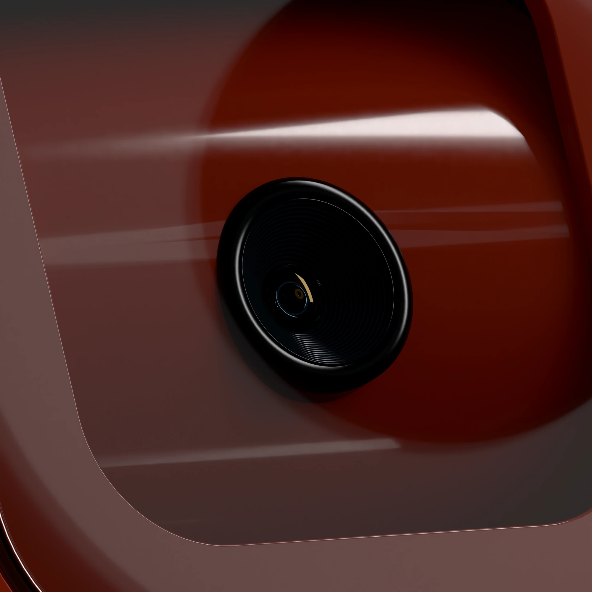
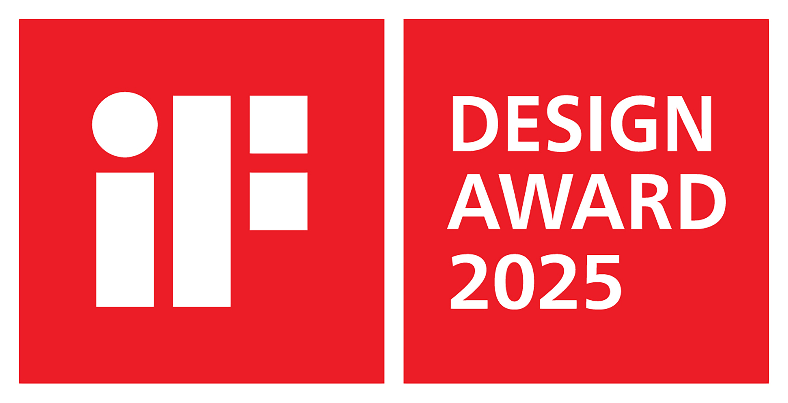
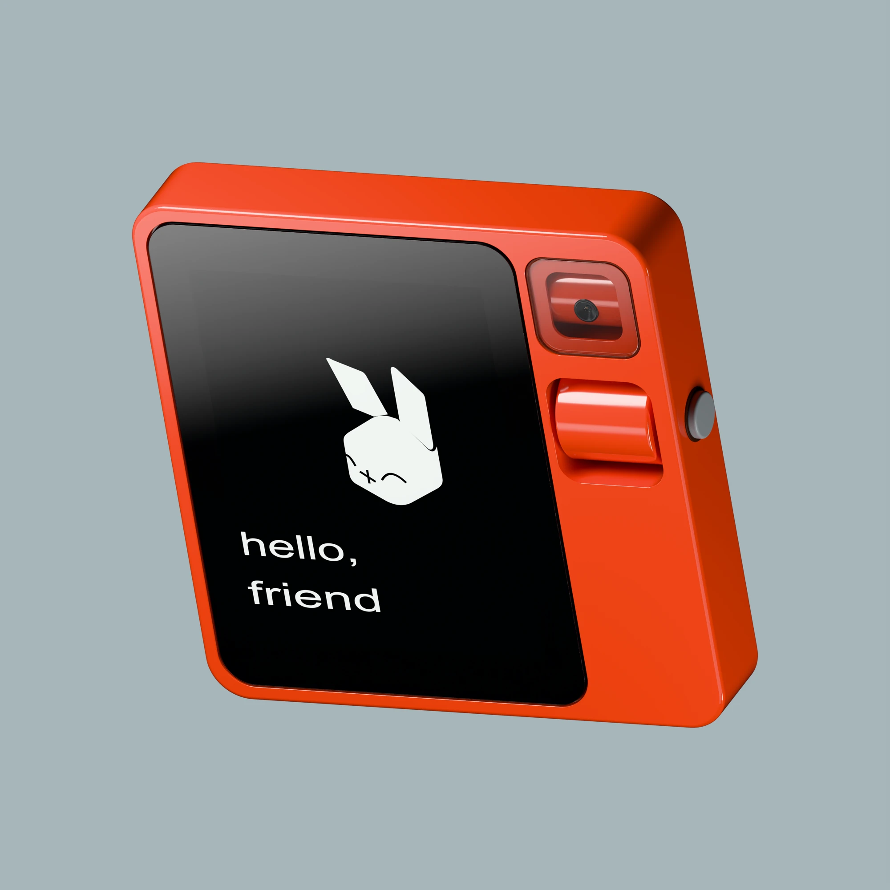
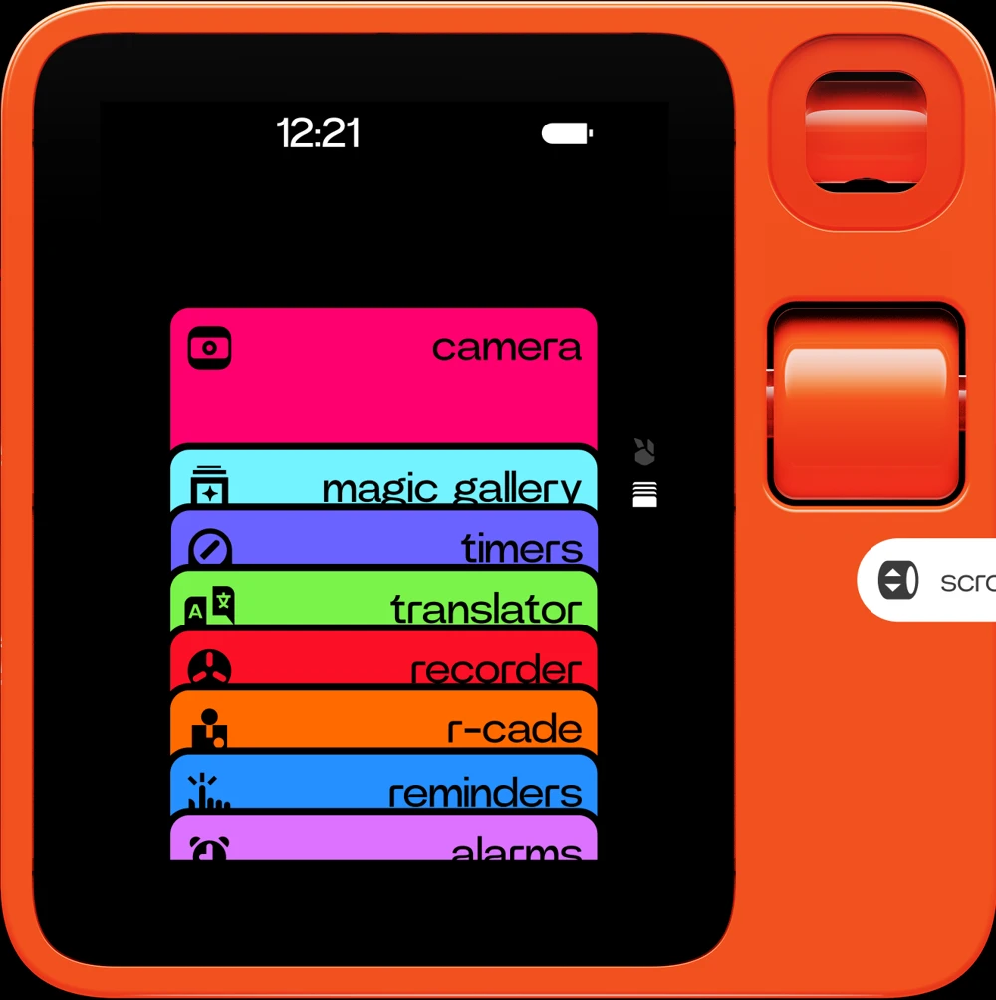
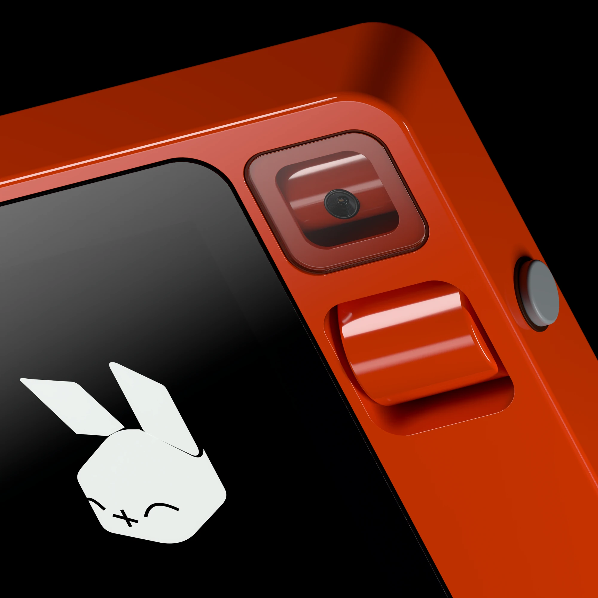
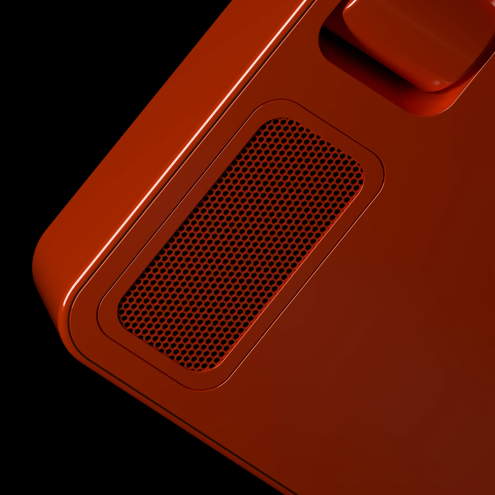
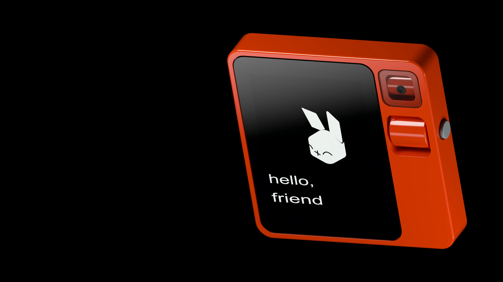

01 / rabbit eyelook both ways.
A rotating camera that sees the world from your side.
A little less screen.
A little more possibility.
Curiosity, meet your new companion. Ask a question. Capture an idea. Make something your own.
get to know r1

meeting r1…Speak to OS3 through r1. Keep the conversation going, bring along relevant context, and work with the tools on your connected computer.

what’s on your mind?
one thought is a good place to start.putting the pieces together…
Scripted demo for this study. No audio is recorded or sent.
A rotating camera. A satisfying scroll. A button that starts a conversation. Every detail has a part to play.

a closer look…Tactile by nature.
Thoughtful in every detail.

01 / rabbit eyeA rotating camera that sees the world from your side.

02 / a little more tactileA turn of the wheel. A press of a button. A feeling all its own.

03 / designed to speakPrecise perforations. Polished edges. Personality you can feel.
